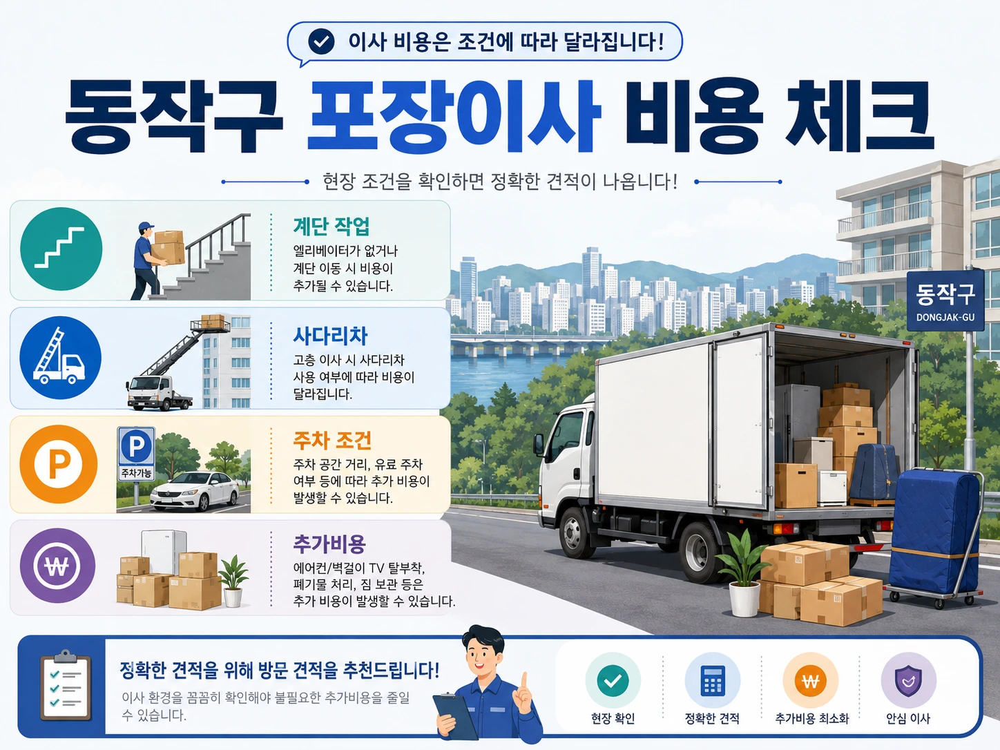
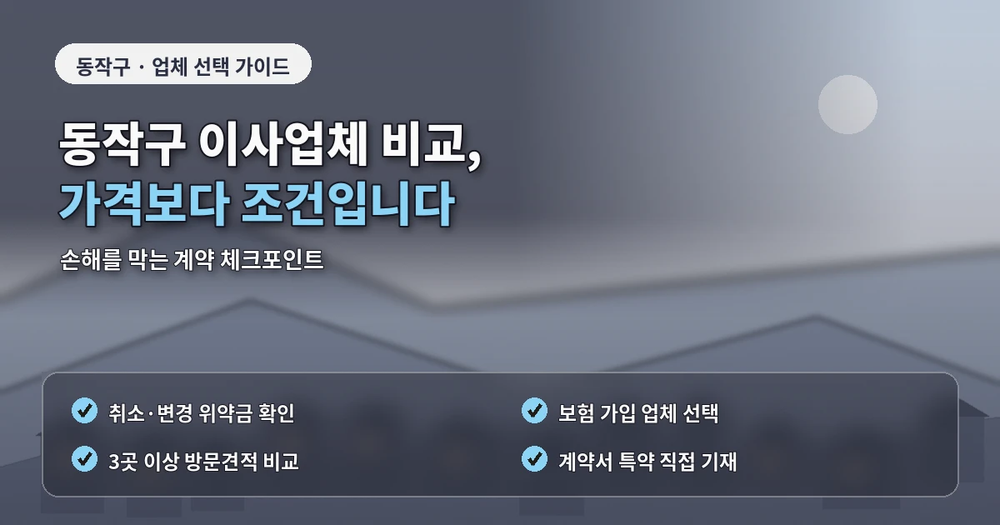

서울 동작구포장이사추천 언덕길 비용 체크
동작구에서 포장이사를 준비할 때는
언덕길과 골목길 조건을 먼저 확인해야 합니다.
상도동과 흑석동은 경사가 있는 주거지가 많고,
사당동은 역세권 주거와 빌라가 함께 있으며,
노량진동은 대학가와 원룸 수요가 많은 지역입니다.
이런 환경에서는
포장이사 비용이 단순 평수보다
차량 접근성, 계단 이동,
짐을 옮기는 거리의 영향을 크게 받을 수 있습니다.
견적이 달라지는 현장 조건
동작구 포장이사 견적을 받을 때는
화물차가 건물 앞까지 들어갈 수 있는지
먼저 확인해야 합니다.
차량이 멀리 서야 한다면
작업자가 짐을 운반하는 거리가 길어지고
그만큼 시간과 인력이 더 필요할 수 있습니다.
특히 언덕길에서는
무거운 가전과 가구를 옮기는 과정이
일반 평지보다 더 까다로울 수 있습니다.
빌라와 다세대주택에서는
계단 폭과 현관 구조도 중요합니다.

냉장고, 세탁기, 침대,
책장처럼 큰 물건이 있다면
계단 이동이 가능한지,
분해가 필요한지,
사다리차를 세울 수 있는지
미리 확인하는 것이 좋습니다.
업체 비교 전 확인할 기준
노량진동의 원룸이나 오피스텔 이사는
짐이 적어도 주차 조건이 좋지 않으면
작업 시간이 늘어날 수 있습니다.
작은 이사라고 해서
무조건 간단하다고 판단하면
당일 추가비용이 생길 수 있습니다.
동작구 포장이사 업체추천을 볼 때는
언덕길과 골목 작업 경험을 확인하는 것이 좋습니다.
아파트 단지 작업과
경사 지역 빌라 작업은
차량 배치와 인력 운영 방식이 다릅니다.
가격이 낮은 업체보다
현장 조건을 구체적으로 묻고
추가비 기준을 명확히 안내하는 업체가 더 안전할 수 있습니다.
포장이사 비교견적을 받을 때는
모든 업체에 같은 정보를 전달해야 합니다.

추가비용을 줄이는 준비 순서
층수, 엘리베이터,
계단 폭, 주차 가능 위치,
사다리차 가능 여부,
대형가전 수량,
버릴 물건과 가져갈 물건을
동일하게 알려야 견적 차이를 제대로 볼 수 있습니다.
추가비용을 줄이려면
이사 전 정리가 중요합니다.
동작구처럼 운반 동선이 길어질 수 있는 지역은
불필요한 짐이 많을수록
작업 시간이 늘어날 가능성이 큽니다.
사용하지 않는 가구,
오래된 책,
고장 난 소형가전,
입지 않는 의류를 미리 정리하면
차량 크기와 인력 배치가 달라질 수 있습니다.
계약 전에는
최종 금액과 함께
계단 운반비,
장거리 운반비,
사다리차 비용,
가구 분해 조립 비용,
파손 보상 기준을 확인해야 합니다.
동작구 포장이사는
언덕길과 빌라 조건이 견적에 직접 영향을 주므로
현장 정보를 자세히 전달하는 것이 핵심입니다.
계약 전에 남겨둘 내용
비용, 견적, 업체추천을 비교할 때도
단순 총액보다
작업 방식과 추가비 기준을 함께 봐야
실제 이사 당일의 부담을 줄일 수 있습니다.
동작구 포장이사는
출발지와 도착지의 고저 차이도 고려해야 합니다.
출발지가 언덕 위 빌라이고
도착지가 대단지 아파트라면
출발지에서는 인력 운반,
도착지에서는 엘리베이터 예약이 각각 중요합니다.
반대로 출발지는 아파트라도
도착지가 좁은 골목 주택이면
차량 대기와 계단 이동이 비용에 영향을 줄 수 있습니다.
이런 조건을 한쪽만 설명하면
견적이 실제 작업과 맞지 않을 수 있습니다.
업체와 상담할 때는
사진 자료를 적극적으로 활용하는 것이 좋습니다.
건물 입구, 계단, 골목 폭,
차량이 설 수 있는 위치를 사진으로 보내면
현장 방문 없이도 어느 정도 작업 난이도를 판단할 수 있습니다.
또한 계약서에는 작업 시작 시간과 예상 종료 시간을 함께 확인해야 합니다.
언덕이나 골목 작업은 시간이 길어질 수 있으므로
도착지 예약 시간을 너무 촉박하게 잡지 않는 것이 좋습니다.
동작구는 언덕 지형이 많은 만큼
이사 당일 날씨도 작업 흐름에 영향을 줄 수 있습니다.
비가 오거나 바닥이 미끄러운 날에는
짐을 옮기는 속도가 느려지고 포장재 사용도 늘어날 수 있습니다.
업체가 우천 시 포장과 바닥 보호를 어떻게 진행하는지
미리 확인해두면 예상치 못한 문제를 줄일 수 있습니다.
특히 흑석동이나 상도동의 일부 주거지는
차량을 세우는 위치와 현관까지의 거리가 멀 수 있습니다.
이 거리를 정확히 알려주면 장거리 운반비 여부를
견적 단계에서 먼저 확인할 수 있습니다.
동작구 포장이사는 견적 전 사진 전달이 특히 유용합니다.
골목, 계단, 현관 폭을 미리 보여주면 업체가 작업 난이도를 더 정확히 판단할 수 있습니다.
자주 묻는 질문
A. 차량 접근이 어렵거나 운반 거리가 길어지면 작업 인원과 시간이 늘어날 수 있습니다.
A. 계단 폭, 골목 폭, 주차 위치, 대형가전 이동 가능 여부를 확인해야 합니다.
A. 짐이 적어도 주차와 계단 조건이 좋지 않으면 추가비가 발생할 수 있습니다.